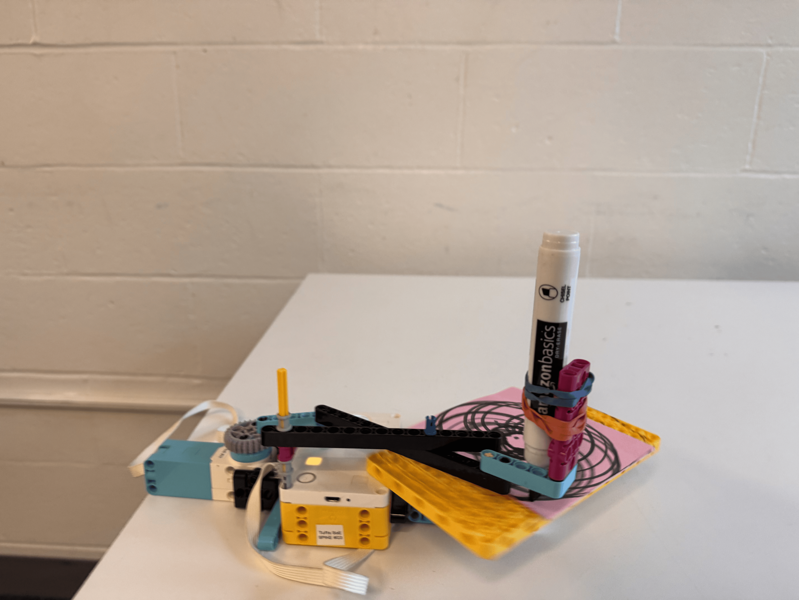
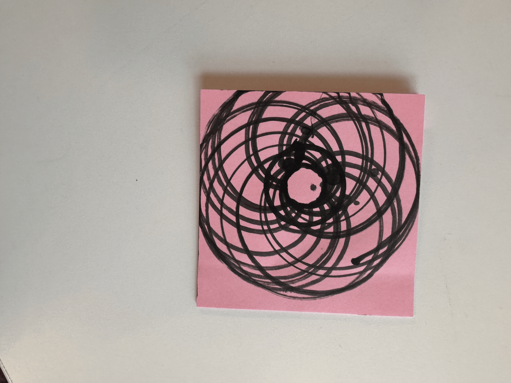

Project Portfolio

Project 05: Spirograph Drawing Machine
In this proiject, I had to design a Spirograph with the SPIKE Prime kit. In the process of designing the machine I tried to break down the affects of different parts of the machine, such as the length of the arms, the speed of rotation, what happeneds if the marker is spinning twice as fast as the plate. From what I tested, the closer the second arm is to the long arm attached to the gear, the smaller the curves are. I also noticed that doubling the speed of the arm, or reducing the speed of the platform would double the amount of curves. one of my biggest issues with this project was trying to limit the range of the marker to only the post-it. In order to solve it, I just played around with different arm lengths until it worked.

